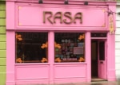

EZ & Moss

Cookies and Scream

Sagar (Covent Garden)

Hackney Downs Vegan Market

Rasa N16

Saladin

Vanilla Black

Manna

Carnevale

Mildreds Soho

Mildreds Camden

Blue Brick Café

Black Cat

Bonnington Café

Café Van Gogh

Mildreds Kings Cross

Vegan Sweet Tooth

Tibits

The Gate Hammersmith

The Gate Islington

The Gallery Cafe

Tanya’s

Rubys of London

Ms Cupcake

Maloko

Indian Veg

Govinda’s

Ethos

Buddha Bowl Van